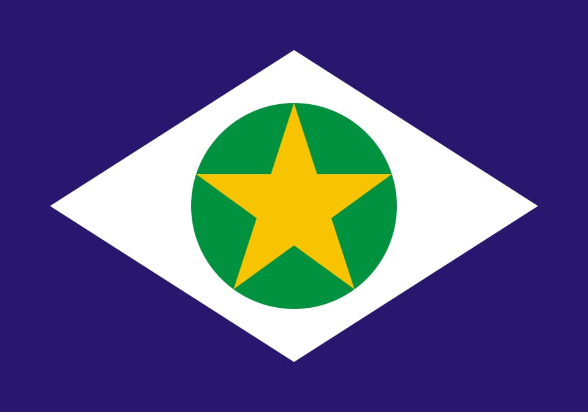

WDD 131 – Dynamic Web Fundamentals – Kelvyn S.Lima
About me
My name Kelvyn silva Lima And I live in Mato Grosso-Brasil, I'm a good person who loves to travel and learn new things. My hobbies include
playing guitar, going to church, and drinking tereré with friends.
I served as a missionary in the northeast of Brazil. I really enjoy to sing and sometimes to dance too.
web dev Resources
Mato Grosso-Brazil

Mato Grosso is a state in central-western Brazil, known for its rich biodiversity.
It includes parts of the Amazon Rainforest, the Pantanal wetlands, and the Cerrado
savanna. Its economy is driven by agriculture and cattle ranching, especially soy, corn, and beef. The capital is Cuiabá.